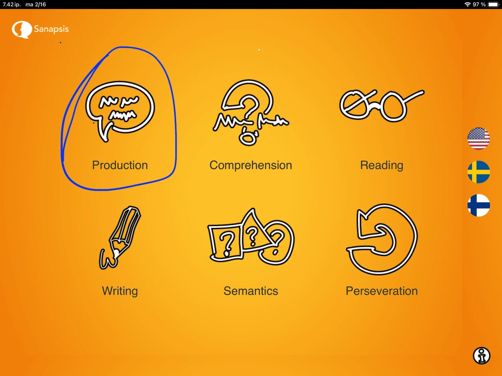

Happy to announce that the Speech Production category update is live!
Head over to the App Store to download the latest version of SanapsisPro and access the new content. As always, all materials are included for all users at no extra cost.

Moving on to our next category - Speech Production
Speech Production category tasks are designed to support and activate speech production during speech and language therapy. Exercises range from simple naming tasks to more complex tasks that require higher-level cognitive and linguistic processing. In this update, we have expanded the content in some of the old favorites and trimmed down others for clarity. All exercises include improved task instructions and tips on how to simplify or increase the difficulty level, or where to go next. All aimed at providing a well-curated and streamlined user experience.
The Speech Production category includes exercises:
Naming (noun)
Naming (action)
I Want to…
Build a Question
Precise Sentence
Descriptive Sentence
Give Instructions
Retell a Story
If you miss the old favorite, Organize a Sentence, you can find it in the Reading section. The task Create a Sentence Around Words has, however, retired. If you would like it to return in the next update, drop me a line!
In the coming weeks, I will share a closer look at each of these exercises. I hope these tasks, materials, and instructions offer an inspiring starting point for you and your clients.
On that note, I would love to hear how you use SanapsisPro in your clinical work! Please drop me a line anytime via email via the link on the upper right hand corner. After all, the strength of Sanapsis is that you and your clients can be as creative as you like, with just a little structure and support help from us.